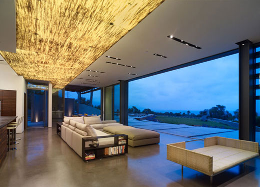

|  |
Bungalow Home Plans
Bungalow homes are a subset within the Arts and Crafts movement (1895 to 1935), which grew from a reaction to the ornate Victorian architecture of 1870 to 1900. Embracing simplicity, handiwork, and natural materials, bungalows are the definition of coziness. Bungalows are often one-and-a-half stories, with low-pitched roofs, shallow "shed" dormers and deep porches. Heavy stone porch column supports, columns that taper as they ascend, and wide projecting eaves are all typical appointments on bungalows, as are exposed eave brackets. Exterior materials include natural siding, brick, and/or stucco.
Features Simple design Low-pitched roof Front porch with heavy column supports |